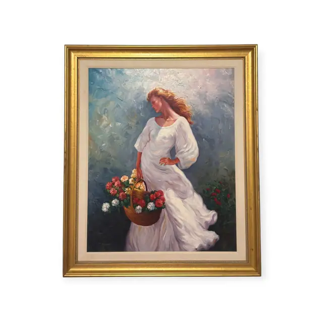
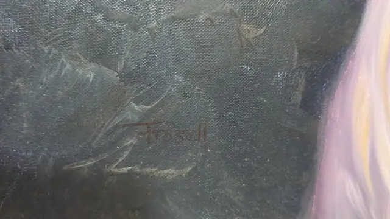
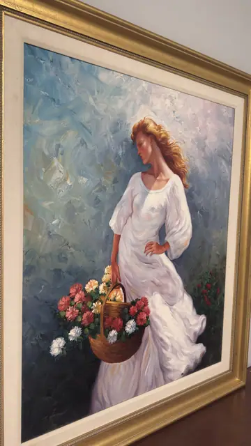
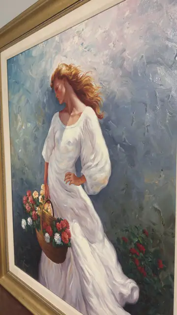

Paintings & Prints
Woman in White with Basket of Flowers, Frosall, Signed, Framed
Frosall · late 20th to early 21st century
Price Upon Request




About the Item
Frosall. A young woman stands three-quarter turned in a garden, her long copper hair blown back and a loose white dress falling in heavy folds to her feet. On her hip she balances a wicker basket crammed with red and white daisies and carnations, echoed by a bank of red flowers at her knees. The background is worked in broad palette-knife slabs of powder blue, lavender and pale grey, so the figure reads as the only solid form in a shimmering, weather-like field. Thick buttery impasto throughout, especially in the dress and the flowers. Medium: oil on canvas. Signed left of centre, painted into the blue-grey background beside the dress, reading "Frosall". Inscribed on the reverse or mount: Frosall (painted signature, background left of the figure). Condition: No visible damage, tears or losses; surface is glossy and the impasto is intact. Some flash glare on the varnish in the detail shots.
Details
- Creator:
- Frosall
- Creation Year:
- late 20th to early 21st century
- Dimensions:
- Height: 48.25 in (122.56 cm)
Width: 41.0 in (104.14 cm)
outside of frame - Medium:
- oil on canvas
- Period:
- 21St
- Condition:
- Offered in the condition shown in the photographs.
- Reference Number:
- VO-114
- Documentation:
- no certificate photographed
- Gallery Location:
- Frosall (painted signature, background left of the figure)